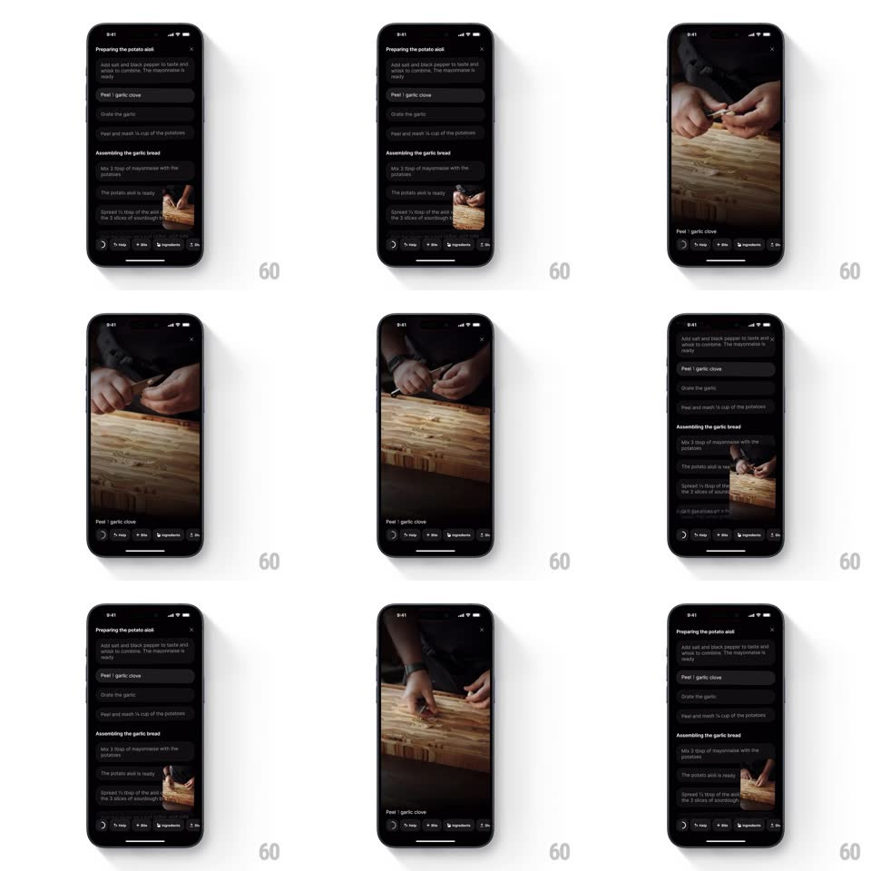

Media
Frame-by-frame

Rebuild this interaction 1:1: Creme's inline video preview - a small video thumbnail docked in the corner of the recipe steps list expands seamlessly into a full-screen step player, then minimizes back into its corner slot on dismissal.

Rebuild this interaction 1:1: Creme's inline video preview - a small video thumbnail docked in the corner of the recipe steps list expands seamlessly into a full-screen step player, then minimizes back into its corner slot on dismissal.
## Integration
Integration: stack-agnostic spec - springs given as stiffness/damping, timed motions as duration + curve; map every value to your framework and animation library of choice.
## Scene
Dark recipe page: step sections ("Preparing the potato aioli", "Assembling the garlic bread") as rounded rows; a small rounded video thumbnail floats bottom-right above the bottom bar (Help / Bite / Ingredients). Expanded: the video fills the screen with the step title ("Peel 1 garlic clove") bottom-left and a close X top-right.
## Motion spec
Pattern: shared-element expand/minimize.
- Tap the thumbnail: the thumbnail's bounds animate to full screen - position, size, and corner radius (12 -> 0) interpolate together (spring ~280/24, ~450ms) so the video appears to grow out of its slot; playback never stutters.
- The step title and controls fade in once the expansion is ~80% done (150ms); the recipe list dims and locks behind.
- Tap X (or swipe down): the reverse - the player shrinks back into the exact thumbnail slot (same spring), controls fading out first; the slot pulses once on landing.
- While docked, the thumbnail keeps playing silently with a subtle live border shimmer.
## Calibration
- One video instance across both states - the morph moves a single player, never swaps two.
- The thumbnail slot stays reserved in the layout so the return lands exactly.
## Reduced motion
Crossfade between docked and full-screen states.
## Don't miss
- The corner radius animates with the size - the "card becomes screen" feel lives there.
- The bottom bar (Help/Bite/Ingredients) persists under both states.